Overview
This project builds a diffuse path tracer from camera-ray generation through adaptive image sampling. Camera rays first find the closest visible surface using triangle and sphere intersections. A bounding volume hierarchy (BVH) reduces the number of primitive tests. Direct illumination is estimated with uniform hemisphere sampling or importance sampling of scene lights. Recursive BSDF sampling adds indirect illumination, with Russian roulette weighting to compensate for randomly terminated paths. Adaptive sampling checks an estimated confidence interval in batches and assigns more camera samples to pixels that have not met the stopping criterion.
The implementation also includes three extensions: a 16-bin surface area heuristic (SAH) for BVH construction, randomly shifted Halton samples for pixel sampling, and iterative BVH construction and traversal. Their comparisons and tradeoffs belong in Part 6. These changes do not make every workload faster or remove all sources of rendering noise.
The correctness follow-ups focused on issues that affect the whole rendering pipeline: preserving ray intervals and nearest-hit records, stabilizing sphere intersections when numerical cancellation obscures the roots, correcting an area-light PDF conversion to solid angle, and making random sampling and intersection statistics safe across worker threads. The resulting technical lesson is that a plausible image is only one check. Geometry needs distance and normal tests, a Monte Carlo estimator needs a PDF in the correct measure, and parallel rendering needs safe state ownership. The report separates those correctness checks from image comparisons and performance measurements.
Part 1: Ray Generation and Scene Intersection
The first stage maps image samples to world-space rays and finds the nearest valid surface hit. Normal shading makes the resulting geometry visible before lighting is evaluated: the surface normal is mapped to color by n / 2 + (0.5, 0.5, 0.5).
Camera ray generation
Camera::generate_ray accepts normalized image coordinates x and y. The virtual sensor lies at camera-space z = −1. Horizontal and vertical fields of view determine its half-width and half-height, giving the unnormalized direction
o = camera position, d = normalize(c2w · s).
The code converts the degree-valued fields of view to radians before evaluating the tangents. Multiplication by the camera-to-world rotation c2w turns the sensor direction into a world-space direction. The ray begins at the camera position, and its direction is normalized after the transformation. Its valid parameter interval is initialized to the camera’s near and far clipping values, nClip and fClip.
Sampling and averaging a pixel
In the default random mode, each camera sample uses two offsets inside pixel (i, j). The image dimensions W and H are used separately, so the mapping also works for nonsquare images:
Ĉij = (1 / k) ∑s=1k L(rs).
raytrace_pixel generates a camera ray for every sample, evaluates its RGB radiance, and accumulates the values before dividing by the number of samples actually taken. Fixed sampling uses the requested sample count. When adaptive sampling is enabled, the same normalization uses the actual stopping count. The average is stored in the HDR sample buffer; conversion to the displayed image happens afterward.
Ray–triangle intersection and barycentric normals
The committed triangle routine uses the two-sided Möller–Trumbore algorithm. For vertices p1, p2, and p3, define edges e1 = p2 − p1 and e2 = p3 − p1. The ray o + t d meets the triangle at p1 + u e1 + v e2. Cross and dot products solve for the barycentric coordinates and distance:
u = (S · P) / Δ, v = (d · Q) / Δ, t = (e2 · Q) / Δ.
A zero determinant is rejected. A negative determinant is allowed, so back-facing triangles can still intersect. A point is inside when u ≥ 0, v ≥ 0, and u + v ≤ 1. The code then requires a finite, nonnegative t inside the ray’s current inclusive interval [min_t, max_t]. On a hit, it reduces max_t to t and updates the intersection record’s distance, primitive, BSDF, and normal. Subsequent primitive tests cannot replace that hit with a farther surface.
The weights are the same barycentric coordinates used for the hit location. The triangle routine stores this interpolated vertex normal without renormalizing it. It does not replace it with the face normal. For lighting, the later local-coordinate construction normalizes its normal axis. This distinction keeps interpolation and shading-frame construction separate.
Ray–sphere intersection and numerical stability
For sphere center c and radius R, substitution of the ray into ‖o + t d − c‖² = R² gives a quadratic. With v = o − c, its coefficients are a = d · d, b = 2(v · d), and cq = v · v − R².
The implemented solver uses an equivalent geometric form rather than directly subtracting the nearly equal terms in b² − 4a cq. It scales the direction by a power of two, then evaluates a radius-normalized perpendicular distance with compensated cross products built from fused multiply-add operations. For the scaled direction d′, it computes
m = −(v · d′) / A, h = R √H / A.
A negative H is a miss. The larger-magnitude scaled root is formed as q = m + copysign(h, m); the other uses the factored root product (‖v‖ − R)(‖v‖ + R) / (Aq). Tangencies and zero-root cases have an explicit midpoint branch. The solver sorts the roots and rescales their parameters back to the original ray.
The nearer root is selected first. If it is negative or before min_t, the farther root is considered, which also handles rays starting inside a sphere. A nonfinite root or one outside the current interval is rejected. A valid hit updates max_t and the intersection record. The outward analytic normal is the normalized radial vector at the hit point; fused multiply-add evaluation of its components helps retain accuracy when the ray origin is far from a small sphere. These precautions improve the tested numerical behavior without asserting robustness for every floating-point input.
Normal-shading results
The following original renderer outputs visualize surface orientation rather than illumination. Planar faces have constant colors, while the spheres show continuous color changes from their analytic normals.
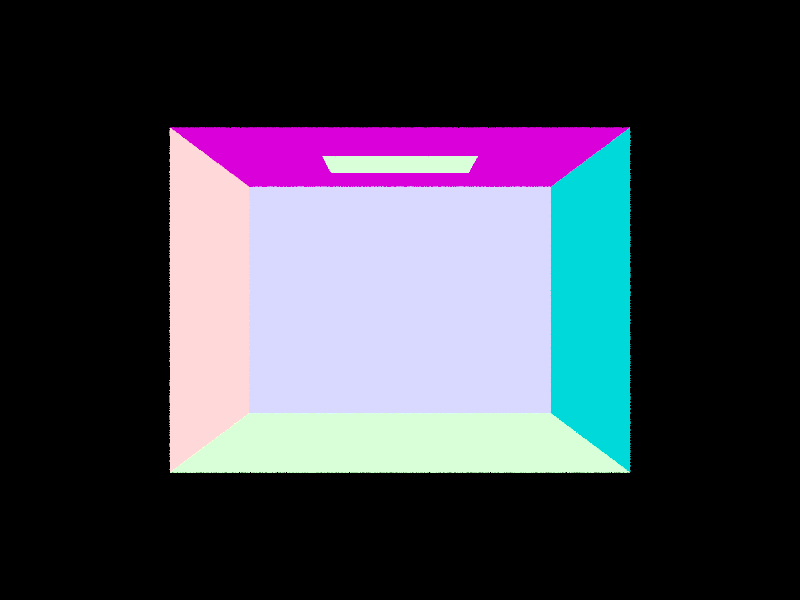
CBempty.dae, normal shading, original 800 × 600 PNG. Constant face colors show the orientation of the intersected triangle surfaces. The black region outside the box represents rays that miss the scene.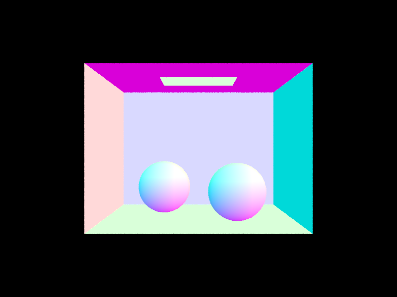
CBspheres_lambertian.dae, normal shading, original 800 × 600 PNG. Smooth normal-color gradients on the spheres contrast with the constant colors of the planar walls, illustrating analytic sphere normals and visibility.Figures 1 and 2 are preserved historical Part 1 renderer PNGs, not operating-system screenshots or new lighting renders. Their scene identities were checked against the original render logs. Original PNG dimensions and bytes are unchanged; the page scales their display proportionally. Unrecorded sampling settings are not inferred from filenames.
Part 2: Bounding Volume Hierarchy
Construction and the split heuristic
A linear closest-hit query can test every primitive. The BVH groups primitives under axis-aligned boxes so that a ray missing a box can skip its entire subtree. The hierarchy copies and reorders a vector of primitive pointers. It owns its tree nodes, but does not own or delete the scene primitives. Leaf nodes retain iterator ranges into that vector.
Construction uses an explicit stack of work items, each containing a primitive range and the destination pointer for its node. For each item, the code unions the primitive bounds and separately bounds their box centroids. A centroid is evaluated as half the minimum plus half the maximum; an empty primitive box uses the zero vector. A range becomes a leaf when its size is at most max(1, max_leaf_size), which is four in the accelerated benchmark. Otherwise it is partitioned and the right and then left child work items are pushed, so the left range is processed first.
The splitting heuristic bins the centroids into 16 bins along each usable axis. Each bin stores a primitive count and a union of the actual primitive bounds. Prefix and suffix unions provide the two child boxes and counts for each of the 15 bin boundaries. The candidate cost is
Here SP, SL, and SR are parent and child box surface areas, and NL and NR are child primitive counts. The traversal and primitive-test costs are both one. All box extents are divided by the same largest parent extent before evaluating area, so the common scale cancels in the ratios and reduces numerical overflow and underflow.
A candidate is admissible only when both children contain at least max(1, floor(N / 16)) primitives. The code selects the lowest-cost admissible boundary across the three axes and partitions by bin membership. This constraint limits highly uneven splits without requiring equal-sized children. The configured leaf cap is a hard limit: above it, the implementation subdivides even if the split cost exceeds the cost of a larger leaf. It does not stop solely because a split is unprofitable.
If the parent has zero area, all centroid axes are unusable, or no admissible bin boundary exists, construction uses a median fallback. The code selects the largest centroid-extent axis and uses nth_element to divide the range by count. This ensures progress even when centroids coincide. The final production method combines this constrained binned SAH with iterative construction; detailed comparisons against other construction methods belong in Part 6.
Box intersection and iterative traversal
The box routine intersects the ray with the three axis-aligned slabs. It starts with the overlap of the caller’s interval and the ray’s valid [min_t, max_t] interval. For a nonzero direction component, the two slab-plane distances are sorted, then used to raise the entry bound and lower the exit bound. An empty overlap is rejected. A zero direction component is handled without division: an origin outside that slab misses, while an origin inside imposes no additional restriction. Boundary contact is accepted when entry equals exit.
Both query types test the root box, then traverse with an explicit stack. Interior nodes push the right child followed by the left child, producing left-first traversal rather than distance-sorted traversal. A missed child box discards all primitives below it. Any-hit queries return immediately after the first valid primitive intersection, which is sufficient for a bounded visibility query.
Closest-hit queries continue through all potentially nearer nodes. Each successful primitive test shortens the ray’s max_t and updates the intersection record. A deferred node’s box is tested against this latest interval when it is popped. A subtree entirely beyond the current closest hit can therefore be pruned without losing a nearer surface. Overlapping bounds can still force many primitive tests, so worst-case traversal remains linear rather than guaranteed logarithmic. Construction and these two traversal paths are iterative; other tree operations, such as destruction, are not claimed to be recursion-free.
Normal-shaded scene results
Figures 3–5 are original outputs from the accelerated mode of a temporary matched normal-render diagnostic. That executable retained the current production camera calculations, scene loading, primitive intersections, normals, and PNG writer. It reconstructed the normal shader for the comparison; the committed global-illumination executable does not expose these diagnostic acceleration modes.
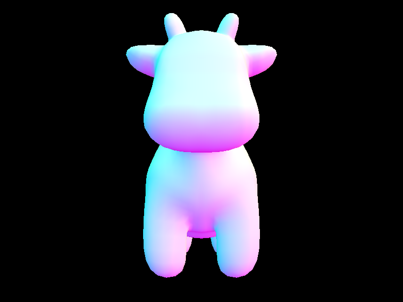
dae/meshedit/cow.dae, 5,856 triangles. Original 800 × 600 normal-shaded PNG from the isolated diagnostic’s SAH iterative BVH mode, using one pixel-center sample per pixel.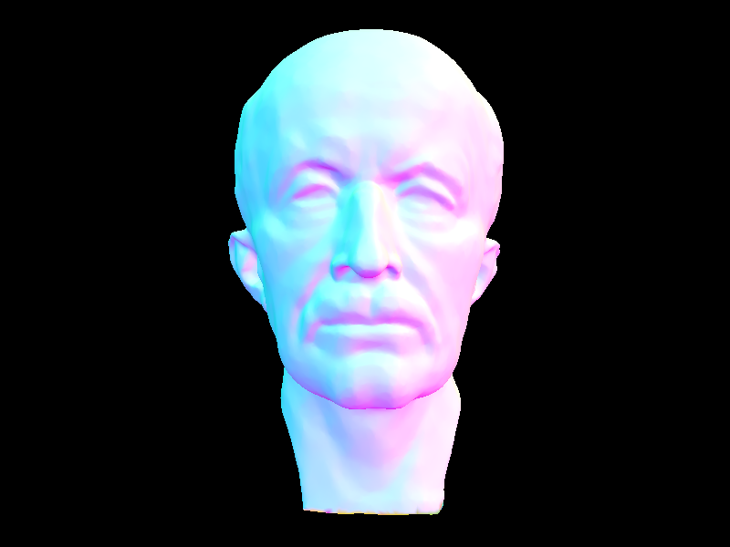
dae/meshedit/maxplanck.dae, 50,801 triangles. Original 800 × 600 normal-shaded PNG from the same accelerated diagnostic and sampling configuration.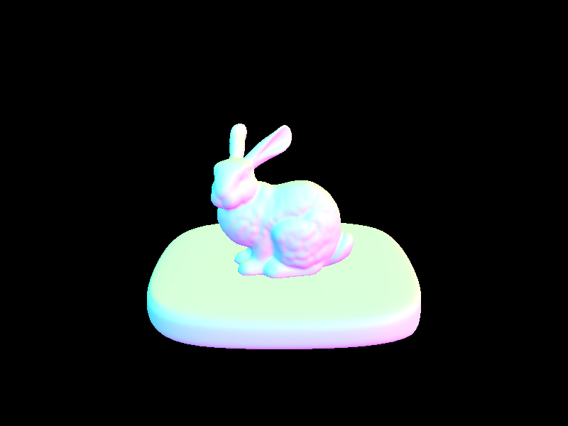
dae/sky/bunny.dae, 33,696 triangles including the base: 28,576 bunny triangles and 5,120 base triangles. Original 800 × 600 PNG from the same accelerated normal-render diagnostic.Matched full-render timings
| Scene | Triangles | Without BVH (s) | With BVH (s) | Speedup |
|---|---|---|---|---|
| Cow | 5,856 | 0.564889 | 0.076737 | 7.36× |
| Max Planck | 50,801 | 6.115441 | 0.241970 | 25.27× |
| Bunny with base | 33,696 | 3.097634 | 0.181642 | 17.05× |
Each scene and mode used five measured trials with alternating execution order, after a preliminary cow pair. The workload was 800 × 600 normal shading, one sample per pixel, eight threads, and identical deterministic pixel-center camera rays. Both modes used the same diagnostic executable, built with AppleClang 21, macOS SDK 26.5, and Release -O3 optimization. They produced pixel-identical images with zero differing pixels.
“Without BVH” denotes a single leaf containing all primitives, with one root bounding-box test retained. “With BVH” uses the current SAH iterative tree. External monotonic wall times include process startup, scene loading, primitive collection, structure construction, rendering, both PNG writes, and normal exit. Compilation and preliminary trials are excluded. Built-in render timers are not used for these speedups. The figures and medians are from this diagnostic normal-render experiment, not global-illumination rendering or the earlier first-mesh intersection workloads.
Analysis
Grouping primitives under boxes reduces intersection work because a missed box rejects many surfaces at once. In the matched full-process normal-render comparison, the SAH iterative BVH achieved median speedups of 7.36× for cow, 25.27× for Max Planck, and 17.05× for bunny with base, while producing identical pixels to the single-leaf baseline. The benefit depends on the geometry, bound overlap, visible region, and ray distribution, rather than triangle count alone. Tree traversal adds box and stack work, construction adds per-invocation cost, and loading and image writing remain in both process timings. These measurements therefore describe the complete diagnostic workload on this machine, not universal acceleration factors or global-illumination render times. Five trials and alternating order reduce some ordering bias but do not control operating-system scheduling or thermal variation. Historical median-BVH cow results and intersection-only speedups measure different experiments; SAH-versus-median and iterative-versus-recursive comparisons are reserved for Part 6.
Part 3: Direct Illumination
Diffuse reflection and emission
DiffuseBSDF::f returns reflectance / PI. Reflectance is the material’s RGB albedo, and the division by π normalizes the Lambertian BRDF. Its value is independent of the incoming and outgoing directions within the supported hemisphere; the incident-angle cosine is applied separately in the lighting estimator.
After a camera ray intersects geometry, zero_bounce_radiance returns that material’s get_emission(). An emissive material returns its radiance, while an ordinary diffuse material returns zero emission. This is the directly visible emission term, not the complete surface radiance: a nonemissive surface can still reflect light through the direct-lighting calculation.
Uniform hemisphere sampling
At the hit point, the surface normal defines the local positive z-axis. make_coord_space supplies the local-to-world rotation, and its transpose maps the outgoing direction into local coordinates. The estimator draws N = number of scene lights × ns_area_light uniform hemisphere directions. Each direction becomes a world-space ray from the hit point with min_t = EPS_F to avoid a numerical self-hit. A closest-hit query finds the first surface along that direction. Only its emission contributes; a miss contributes zero in this estimator, with no environment lookup.
The local direction’s z component gives cos θ. Division by the solid-angle PDF and averaging over all draws, including misses and nonemissive hits, give the Monte Carlo normalization. If the sample budget is zero, the function returns zero. This uniform direct-light sampler is distinct from BSDF path continuation and from pixel sampling.
Importance sampling of lights
The other estimator loops over the scene lights. Each light’s sample_L supplies incident radiance, a world-space direction, distance, and sampling PDF. Delta lights receive one sample; other lights receive ns_area_light samples. Invalid PDFs or directions and samples below the local surface hemisphere are rejected. Visibility uses a shadow ray with min_t = EPS_F and max_t = distToLight - EPS_F, so intersections beyond the sampled light do not occlude it. For a visible sample, the contribution is incident radiance × BRDF × local direction z / PDF. The code averages each light’s sample budget, counting rejected samples as zero, then sums the light estimates.
For the rectangular area light, sampling is uniform over area A. The corrected conversion to a directional PDF is p(ω) = r2 / (A |nlight · ω|), with ω normalized before evaluating the cosine. The light retains its one-sided emission check. one_bounce_radiance selects between these two direct estimators using direct_hemisphere_sample.
Matched estimator comparison
Both original renders below use CBbunny.dae, the same default camera, 480 × 360 pixels, 16 samples per pixel, a light-sample setting of 4, maximum depth 1, one thread, and disabled adaptive sampling. The recorded commands differ in estimator selection through -H. The hemisphere budget is four directions per scene light per camera sample; the light estimator draws four samples from each non-delta light.
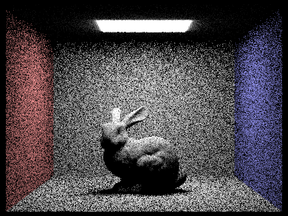
These are the original post-correction PNGs from the area-light PDF follow-up. The retained commands, render logs, and evidence report establish their historical settings; no new render was made. The hemisphere implementation reads emission from intersected geometry, whereas explicit area-light sampling enforces one-sided emission. The ceiling difference should therefore not be interpreted entirely as sampling noise or as a pixelwise equivalence test.
Area-light samples and soft shadows
The next four original renders hold CBbunny.dae, its default camera, 480 × 360 resolution, random pixel sampling at 1 spp, maximum depth 1, accumulated illumination, eight threads, and disabled adaptive sampling constant. All use explicit light importance sampling, with -H omitted. Only the light-sample setting and output filename change in the recorded commands: -s 1 -l 1, -s 1 -l 4, -s 1 -l 16, and -s 1 -l 64.
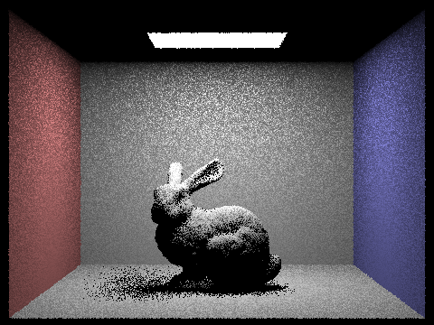
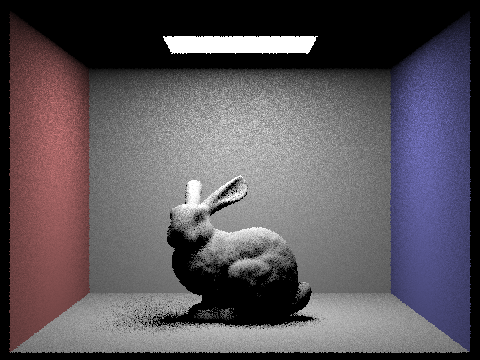
The finite emitter area creates a penumbra because different sampled points on the light have different visibility. These four realizations show less random speckling as the number of light samples increases, while the broad shadow shape stays consistent. One pixel sample still leaves camera-sampling noise and jagged object edges. Individual pixels need not improve monotonically, and these images do not supply a reference-based error measurement.
The four originals are recorded in the final Part 3 evidence manifest at production commit a8474c1. Each successful renderer invocation used -f; dimensions, camera records, settings, and original SHA-256 hashes were checked before copying the PNG bytes unchanged.
Estimator comparison analysis
Both strategies aim to estimate reflected direct illumination, but uniform hemisphere directions frequently miss the small ceiling emitter in this Cornell Box, leaving many zero contributions. Explicit light sampling targets the emitter and bounds each visibility ray to the sampled light distance. In the matched 16-spp images, it produces substantially smoother walls and floor shadows, making it the more effective sampling strategy for this scene at these settings. That observation concerns noise in these realizations, not a claim that noisy hemisphere sampling is intrinsically biased; the emission-sidedness distinction noted above also limits exact agreement. Neither method guarantees a cleaner result for every random image, and this comparison is not a formal convergence proof or a timing benchmark.
Part 4: Global Illumination
Cosine-weighted diffuse sampling
DiffuseBSDF::sample_f draws a local incoming direction from its cosine-weighted hemisphere sampler, writes the direction and PDF through its output pointers, and returns f(wo, wi) = RGB reflectance / π. The sampler maps two uniform values to a disk with radius √ξ₁ and angle 2πξ₂, then lifts the point to z = √(1 − ξ₁). Its solid-angle PDF is p(ω) = cos θ / π. This concentrates samples near the normal, where the Lambertian transport integrand has greater cosine weight. Consequently, f cos θ / p simplifies to RGB reflectance for a valid diffuse sample. This is BSDF path continuation, distinct from the uniform hemisphere direct-light estimator in Part 3.
Recursive radiance and depth semantics
Camera rays start with depth = max_ray_depth. After a hit, est_radiance_global_illumination adds primary material emission when accumulation is enabled or depth is zero. Positive depths also enter at_least_one_bounce_radiance. That function returns zero at depth zero and evaluates direct light when accumulation is enabled or the remaining depth is one. Depth one returns immediately. Otherwise it may continue, samples the BSDF, rejects invalid PDFs or below-surface directions, transforms the direction through o2w, and traces a secondary ray from the hit point with min_t = EPS_F and depth reduced by one. A closest intersection supplies the next material and normal; a secondary miss contributes zero.
Here D is the direct term allowed by the bounce mode, and q is the continuation probability. The recursive call is to at_least_one_bounce_radiance, rather than the primary-ray wrapper: secondary light endpoints are accounted for by explicit light sampling, without adding a separate BSDF-hit emission term. Primary misses can use the environment in the wrapper, but secondary misses do not. This describes the implemented diffuse estimator and its current limits.
In individual mode (-o 0), m = 0 shows visible emission; m = 1 shows reflected direct light without primary emission; m ≥ 2 isolates the selected higher order by postponing the direct term until remaining depth one. In accumulated mode (-o 1), primary emission and all eligible reflected orders up to m are retained. Thus an accumulated depth-5 image shows direct plus indirect global illumination, whereas an individual depth-5 image shows only the fifth order.
Direct-only and indirect-only views
These two views were produced with an isolated temporary diagnostic modification of the path tracer. The production implementation was not changed for this comparison. Direct mode returns primary visible emission plus first-surface direct illumination. Indirect mode suppresses primary emission and the first surface’s direct estimate, while preserving the recursively weighted direct estimates at deeper surfaces. Both use CBbunny, 480 × 360, 1024 spp, 4 light samples, maximum depth 5, accumulated mode, eight threads, random pixel sampling, and disabled adaptive sampling.
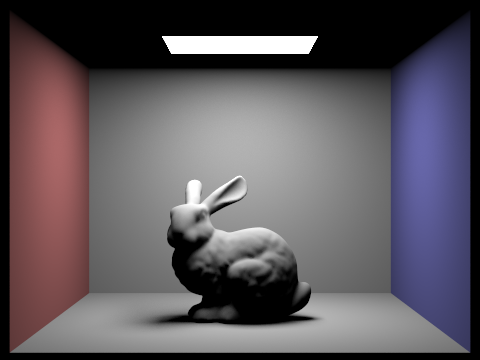
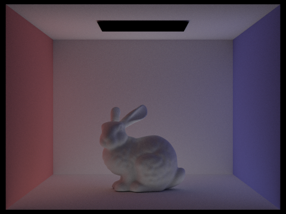
The direct view contains the bright ceiling emitter and the main cast shadow, but the ceiling and shadowed bunny remain dark. The indirect view fills these regions and transfers red and blue wall colors to the bunny and room. Its black emitter is intentional: directly viewed emission belongs to the direct component, while the emissive material has no scattering contribution here. The full global images below combine these kinds of transport. Independent random samples and nonlinear display conversion mean the displayed PNGs must not be added as an exact reconstruction.
Individual versus accumulated bounces
Each pair below compares the same maximum depth, with individual order on the left and accumulated illumination on the right. Every original uses CBbunny’s same default camera at 480 × 360, 1024 spp, 4 light samples, eight threads, random pixel sampling, importance-sampled direct light, and adaptive stopping disabled. All production images in this section came from commit a8474c1 with Russian roulette already implemented.
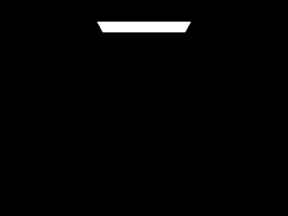
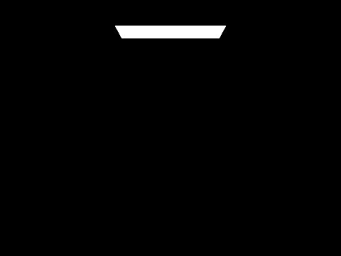
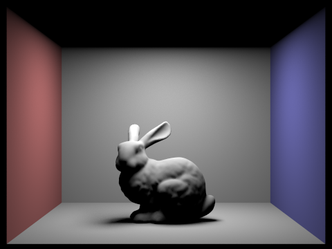
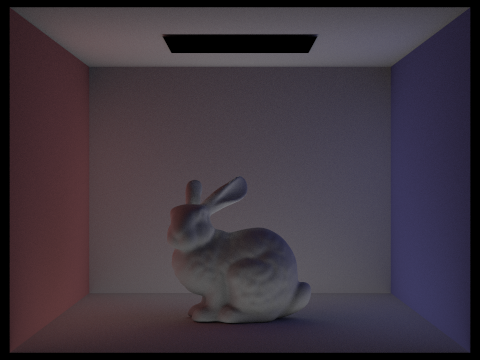
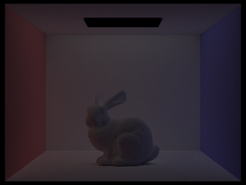
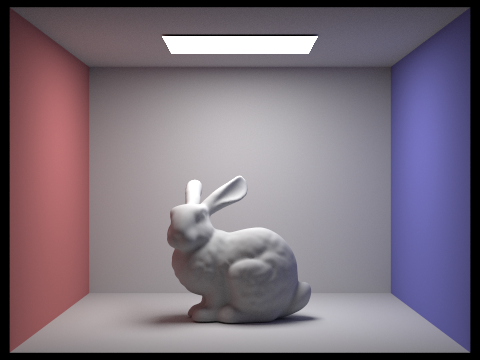
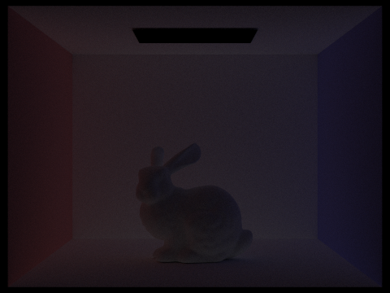
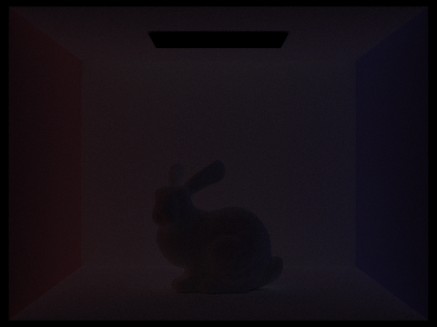
What the second and third bounces add
The individual m = 2 image isolates light reaching the visible surface after one additional surface reflection: the ceiling receives fill, the bunny’s previously dark regions become visible, and the red and blue walls tint neighboring surfaces. The m = 3 image shows another diffuse reflection, with a weaker but still colored contribution across the bunny and room. In the accumulated pairs, these orders soften the overly dark direct-only appearance and make surfaces feel connected by shared illumination. Orders four and five are smaller in these particular images, although their structure remains visible. Basic rasterization resolves visible surfaces but does not automatically integrate this recursive diffuse transport; similar fill and color bleeding require added methods such as lightmaps or other global-illumination techniques.
Increasing accumulated depth includes more bounce orders, but independent random draws do not guarantee that every displayed pixel becomes brighter. The individual PNGs are separately sampled and tone-mapped, so summing them in display space is not a valid accumulated-radiance calculation.
Russian roulette and the depth limit
For maximum depth greater than one, the initial surface’s continuation uses q = 1, ensuring that one indirect direction is attempted. At later eligible vertices, q = 0.65 gives a 35% termination probability. Termination retains any direct estimate already computed at that vertex; survival weights only the recursive contribution by 1/q. Depth one returns without a continuation test, and misses stop the path. Probability compensation preserves the expected finite-depth contribution under stochastic termination, while the remaining maximum-depth cutoff still truncates longer paths. Depth 100 therefore permits much deeper transport, not infinitely long paths.
The six views below use 1024 spp, 4 light samples, and accumulated mode. The m = 0–4 views reuse the exact accumulated images above: their manifests identify the same production executable containing roulette, with matching settings. At depths zero and one no roulette decision is reached; depth two forces its sole indirect continuation. The separate original m = 100 render exercises the deeper roulette-enabled pipeline. It retains the room’s indirect fill and color bleeding without an obvious large change in overall appearance from accumulated m = 5. Random termination avoids tracing every path to an excessive cap, but these images provide neither path-length statistics nor a measured speedup.
Samples per pixel and image noise
This series holds CBbunny, its default camera, 480 × 360 resolution, 4 light samples, maximum depth 5, accumulated illumination, eight threads, random pixel sampling, importance-sampled direct light, and adaptive stopping disabled constant. Only spp and output filenames vary. The 1024-spp endpoint reuses accumulated m = 5 above and is also a primary example of global direct-plus-indirect illumination.
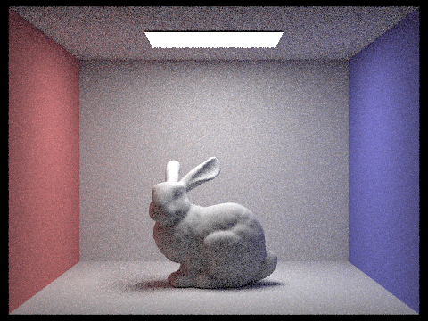
At 1–4 spp, strong multicolor grain obscures wall shading, bunny detail, and the shadow transition. At 8–16 spp the lighting is more stable, while 64 spp is noticeably smoother and 1024 spp retains finer detail with much less grain. Increasing the camera-sample budget requires more sampling work, and progressively larger budgets yield diminishing visible improvements; no runtime benchmark is inferred here. The 1024-spp image remains a finite Monte Carlo result, not analytic ground truth. One realization per setting does not prove convergence or monotonic improvement at every pixel.
All figures in this section use original renderer -f output, copied without cropping, resizing, recompression, or color changes. The individual, accumulated, depth-100, spp, and isolated-diagnostic manifests supply the settings and original SHA-256 hashes. The production random generator uses a separately seeded thread-local Mersenne Twister per thread; independent runs have different random streams. The observations concern visible PNG appearance, not a proof of finite HDR radiance everywhere or a calibrated error estimate. No new render was made for this report milestone.
Part 5: Adaptive Sampling
Pending a later report milestone.
Part 6: Extra Credit Opportunities
Pending a later report milestone.